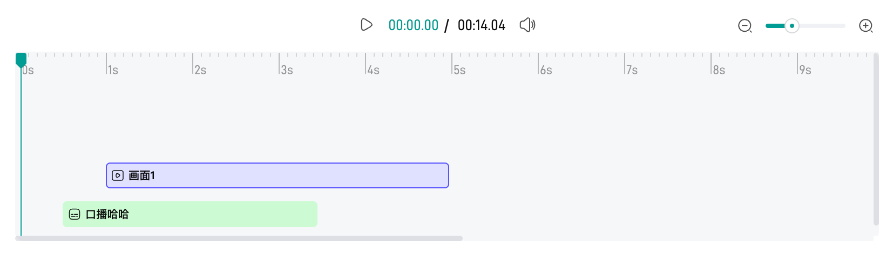

In the previous post, we have learned how to design a video player. In fact, a video player is a container containing many tracks, such as bgm, text, and so on. Can we show and edit these tracks? Of course we can. But today, we will focus on the UI part. For the edit operation, we will talk it later.
Comps

From the above image, we can see that the track panel has three main parts:
-
timeline(scale + indicator)
- the container for both zoom and track
- the initial reference is called
baseWidth, which means how many pixels 1 second hold - When zoom in,
baseWidthbecomes larger; When zoom out,baseWidthbecomes smaller
-
zoom
- zoom-in and zoom-out, which affects the width of the timeline and the track
-
track
-
several types, e.g.
bgm/text/tts... -
each track type can have many segments, and segments can overlap. If so, we move down the last segment like down staircases. We use
yIndexindicates the index of the segment along theyaxis in the same track type. Usually,yIndexis0. -
each track has its start position defined by offsetX(
startTime * baseWidth) and offsetY(yIndex*trackHeight) as well as width decided bydurationandbaseWidth.
-
Track
First, different track type has different styles, so we need to define each track type first.
enum TRACK_TYPE {
BGM = 1,
TEXT,
TTS,
SUBTITLE,
VIDEO,
CLIP,
}
Second, each track has its position and width, which is determined by the start time, duration, yIndex and the baseWidth.
width = duration * baseWidth
offsetX = startTime * baseWidth
offsetY = yIndex * someHeight
<template>
<div :class="['track', 'track-' + type]" :style="styleObj" :data-scale="baseWidth" :data-start="startTime" :data-duration="duration">
<div :class="['track-inner']">
<icon />
<span class="track-text"><slot /></span>
</div>
</div>
</template>
<script>
const styleObj = computed(() => {
return {
width: (props.baseWidth / 1000 * props.duration) + 'px',
transform: 'translate(' + (props.baseWidth / 100 * props.startTime) + 'px,' + props.yIndex * props.yOffset + 'px)',
}
})
</script>
<style>
.track-bgm {
&:hover .track-inner {
outline: 1px solid #f00;
outline-offset: -1px;
}
&:active .track-inner,
&.active .track-inner {
outline: 2px solid #f00;
outline-offset: -2px;
}
}
</style>
The interesting thing here is the use of outline instead of border. The reason is that the segment width in hover status is 1px while it’s 2px in active status. If we use border, the whole segment will shake slightly when we hover and click it.
<style>
.track-bgm {
&:hover .track-inner {
border: 1px solid #f00;
}
&:active .track-inner,
&.active .track-inner {
border: 2px solid #f00;
}
}
</style>
The reason is that border takes up space. Luckily, outline can do this.
Unlike other areas of the box, outlines don’t take up space, so they don’t affect the layout of the document in any way - MDN
Besides outline, we can also use border + box-shadow to achieve the same effect.
<style>
.track-bgm {
.track-inner {
border: 1px solid transparent;
}
&:hover .track-inner {
border-color: #f00;
}
&:active .track-inner,
&.active .track-inner {
border-color: #f00;
box-shadow: 0 0 0 1px #f00;
}
}
</style>
Zoom
This component is simple enough. All we care about is the scale value.
function onZoomOut() {
emit('change', Math.max(props.min, scaleVal.value - props.step) / (props.max - props.min))
}
function onZoomIn() {
emit('change', Math.min(props.max, scaleVal.value + props.step) / (props.max - props.min))
}
function onChange(val) {
emit('change', val / (props.max - props.min))
}
Timeline
timeline is a little difficult. First, the whole timeline need to be scalable by the zoom scale. Second, we can seek at any position of it.
Ruler
There are 2 things about ruler
-
suppose there are
nseconds in total, the total duration in the ruler should be greater thannsince we need some room in a ruler -
ruler should divided equally: the major scale is
s, and the minor scale isms
Based on the above two principles, we can write code like this
<template>
<div class="timeline-ruler-wrap">
<a-seek @seek="onSeek" scrollable class="timeline-ruler">
<div class="timeline-major" v-for="m in realMax - min">
<span class="timeline-major-text">{{ min + m - 1 }}s</span>
<span class="timeline-minor" v-for="n in step"></span>
</div>
</a-seek>
</div>
</template>
<style lang="less">
.timeline-ruler {
display: flex;
.timeline-major {
flex: 1;
display: flex;
justify-content: space-between;
}
.timeline-minor {
flex: 1;
}
}
</style>
<script lang="ts" setup>
const realMax = computed(() => props.max + props.threshold)
</script>
Auto-Resized
As mentioned earlier, we define a param called baseWidth, which means the width per second(e.g. 80px/1000ms) or the width of a major scale. Thus, we can set the whole timeline in this way
<template>
<div class="timeline-ruler-wrap" :style="wrapStyle" ref="scrollRef">
<a-seek @seek="onSeek" scrollable class="timeline-ruler">...</a-seek>
</div>
</template>
<script lang="ts" setup>
const wrapStyle = computed(() => ({
width: props.baseWidth * (realMax.value - props.min) + 'px',
}))
</script>
As the zoom changes, we can get the scaled value from the change event, and then we simply change the baseWidth
<template>
<div class="editor-track-panel">
<a-zoom @change="onZoomChange" />
<a-timeline :baseWidth="baseWidth" />
</div>
</template>
<script lang="ts" setup>
function onZoomChange(changedRatio) {
state.baseWidth = props.defaultBaseWidth * changedRatio
}
</script>
seek
Last, we need to seek any position of the timeline. It’s easy to get the click position, however, there two issues
-
the ratio of the click position relative to the timeline is not exactly the ratio of the currentTime relative to the video duration. Why? Because the timeline has some extra room for UI experience. In other words, the video is
Nseconds, but the timeline isN+mseconds. -
the timeline can scroll in the horizontal direction
To have the exact click position, we use clientX instead of offsetX. offsetX can be used in simple cases, for example, a pure div container. But in our case, major-scale and minor-scale are set position: relative/absolute, thus, offsetX is unstable because the minor-scale is relative major-scale. On the contrary, clientX will always be the position we click.
<div @click="onClick" ref="seekRef"></div>
<script>
function onClick(e) {
const ratio = (props.scrollable ? e.clientX : e.offsetX) / seekWidth
emit('seek', ratio, seekWidth)
}
onMounted(() => {
seekWidth = seekRef.value.clientWidth
})
</script>
However, clientX is not sufficient because the timeline can scroll, so we need to calculate both the scrollLeft and clientX of the timeline. The formula is
realPosition = ratio * seekWidth - clientXOfTimeline + scrollLeftOfTimeline
<template>
<div class="editor-track-panel">
<a-zoom @change="onZoomChange" />
<a-timeline :baseWidth="baseWidth" @seek="oSeek" />
</div>
</template>
<script lang="ts" setup>
// seekRealPos = progress * totalW - getElementViewOffset(timelineRef.value).left + timelineRef.value.scrollLeft
function onSeek(seekRealPos) {
// duration is measured by `second`
const seekPercent = seekRealPos / (props.baseWidth * props.duration)
const currentTime = seekPercent * props.duration
}
</script>